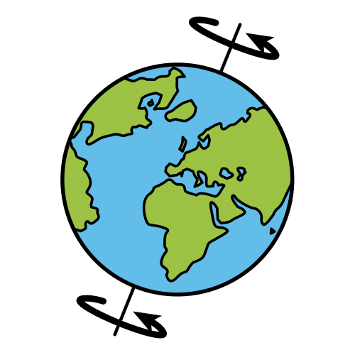

Earth's rotation
The Earth is the only planet where living things can live.
The average temperature on Earth is 15°C, the atmosphere has oxygen, and there is water in three states: solid, liquid, and gas.
The Earth has two movements:
Rotation
The Earth rotates on its axis. It takes 24 hours, or one day, to complete one rotation.
This makes day and night.

Earth's revolution
Revolution
The Earth revolves the Sun. It takes 365 days and 6 hours, or one year, to make one orbit.
The Earth’s axis is tilted, so the Sun’s light reaches the Earth at different angles.
This causes the seasons: spring, summer, autumn and winter.

The Moon
The Moon is the Earth’s satellite. It is smaller than the Earth.
Like the Earth, the Moon has two movements:
Orbit
The Moon revolves the Earth. It takes 28 days to complete one orbit.
Rotation
The Moon rotates on its own axis. It also takes 28 days to complete one rotation.
The Moon’s orbit and rotation take the same amount of time.
The Moon looks different depending on where it is in the sky. These changes are called the lunar phases and it causes the tides..

Video
Click here to download the subtitles of the video
Document
Click here to download the document "How do the Earth and Moon move?".

Average

Definition: The middle value, not too high or too low.
Spanish word: Promedio, media
Living thing

Definition: A being that is born, grows, reproduce, and dies.
Spanish word: Ser vivo
Revolve

Definition: To move around something in a circle.
Spanish word: Girar, dar vueltas
Tilted

Definition: Not straight, at an angle.
Spanish word: Inclinado, inclinada
Reach

Definition: To get to a place or point.
Spanish word: Alcanzar
Angle

Definition: The space between two lines that meet.
Spanish word: Ángulo
Tide
Definition: The rise and fall of the sea level caused by the Moon's gravity.
Spanish word: Marea
Read
The Earth takes 1 day to rotate on its own axis.
La Tierra tarda un día en rotar sobre su propio eje.
 This causes day and night.
This causes day and night.
Esto causa el día y la noche.
The Earth takes 1 year to revolve the Sun.
La Tierra tarda un año en girar alrededor del Sol.
This causes las estaciones.
Esto causa las estaciones.
The Moon takes 28 to rotate on its own axis.
La Luna tarda 28 días en rotar sobre su propio eje.
The Moon takes 28 to revolve the Earth.
La Luna tarda 28 días en girar alrededor de la Tierra.
 This causes the lunar phases.
This causes the lunar phases.
Esto causa las fases lunares.


 Definition: Emit or reflect light.
Definition: Emit or reflect light.
 Definition: The sky is the big space above us. It is blue during the day and dark at night.
Definition: The sky is the big space above us. It is blue during the day and dark at night.


 You are working very well.
You are working very well..png "Elegir") Choose the options that you prefer.
Choose the options that you prefer.{kind=link}
{kind=link}
{kind=link}
{kind=link}